ידייםHands
מניקור, לק ג׳ל, ג׳ל במבנה אנטומי.Manicure, gel polish, anatomical gel.
קונספט לדוגמה שנבנה עבור HODAYA NAILS – מכון יופי לציפורניים · זה אינו האתר הרשמי של העסקA sample concept built for HODAYA NAILS – Nails & Beauty · This is not the business’s official website
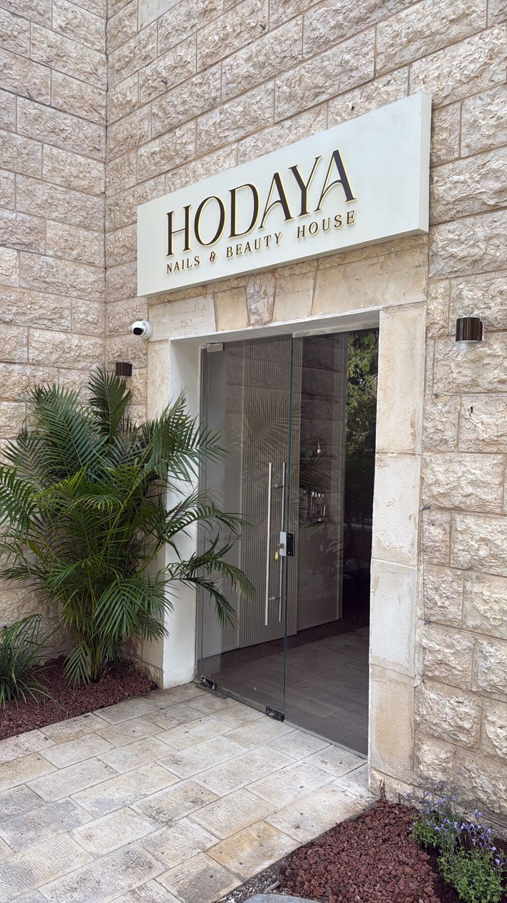
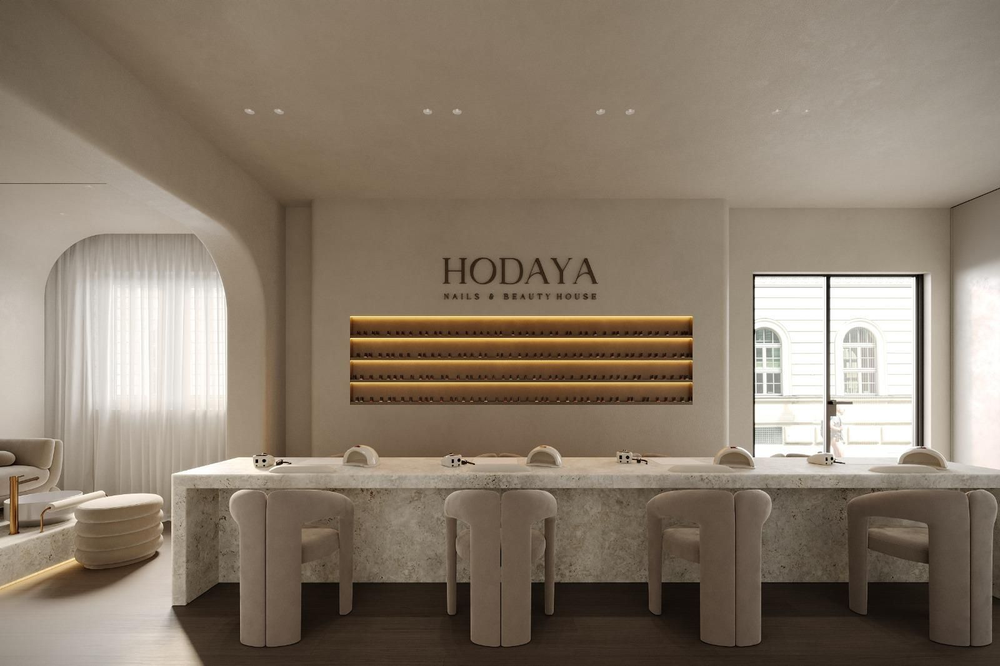
שדרות מוריה 30. נכנסים, ומתיישבים ליד שולחן האבן.30 Moria Blvd. Walk in and take a seat at the stone bar.
ציפורניים ויופי, בשדרות מוריה.Nails & beauty, on Moria Blvd.
HODAYA NAILS – מכון יופי לציפורניים: מניקור, לק ג׳ל, בנייה ופדיקור, בחיפה.HODAYA NAILS – a nail & beauty studio: manicure, gel polish, extensions and pedicure, in Haifa.
שדרות מוריה 30: קיר לקים מואר, שולחן אבן וכורסאות קטיפה.30 Moria Blvd: a lit polish wall, a stone bar and velvet chairs.
עבודות מהסטודיו. גררי, או פשוט גללי.Work from the studio. Drag it, or just scroll.
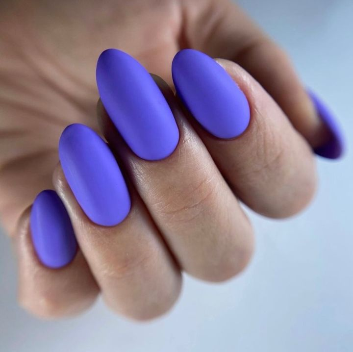
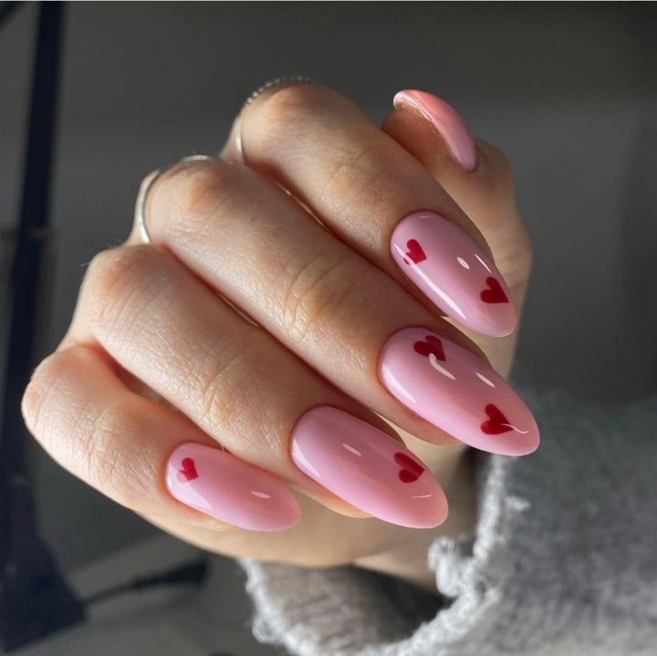
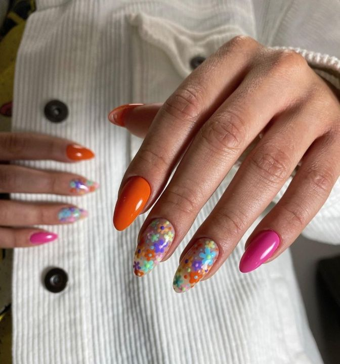
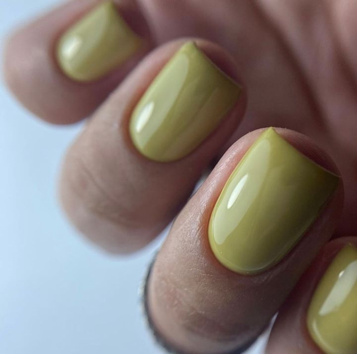
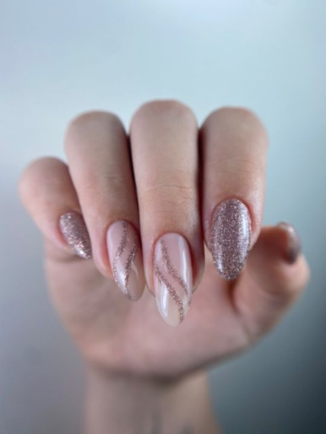
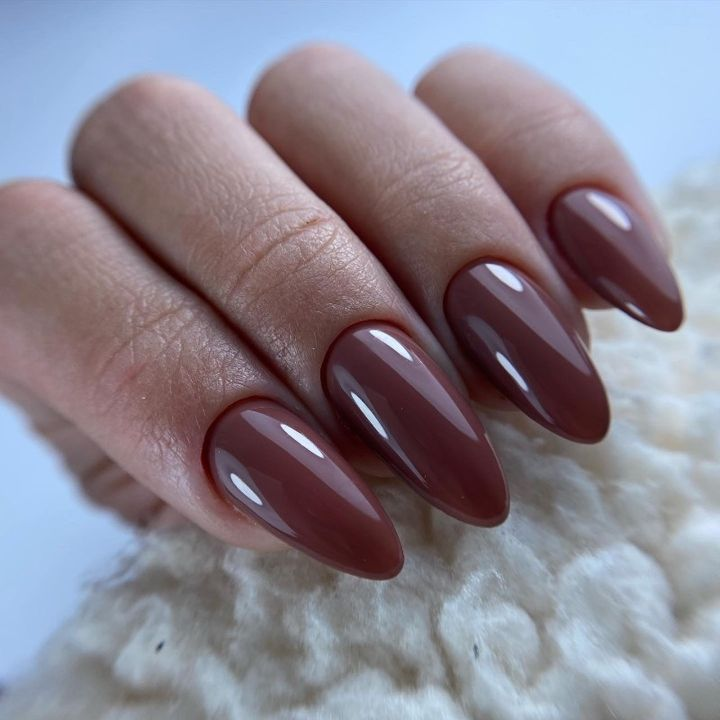
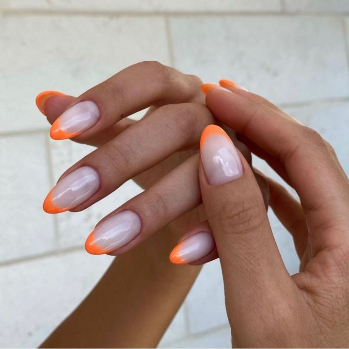
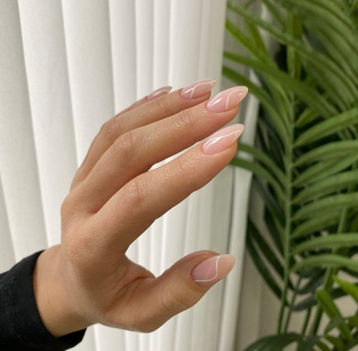
אדום מבריק
אבחנה
מניקור, לק ג׳ל, ג׳ל במבנה אנטומי.Manicure, gel polish, anatomical gel.
בנייה בג׳ל, מילוי, טיפסים הפוכים.Gel extensions, fills, dual forms.
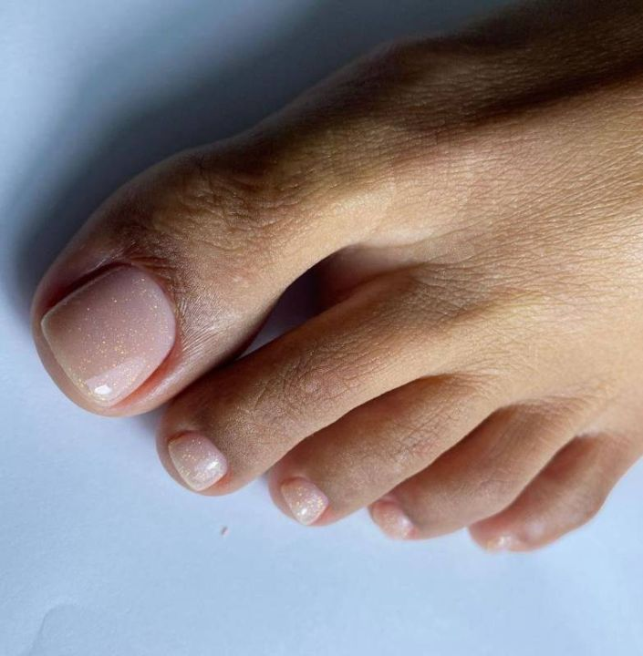
פדיקור, פדיקור ספא מלא.Pedicure, full spa pedicure.
פרנץ׳, קישוט, תיקון ציפורן.French, nail art, a nail repair.
עיצוב גבות, שפם ושעווה בפנים.Brow shaping, lip and face waxing.
בוחרות אצל מי בזמן קביעת התור.You choose with whom when you book.
הדירוג הממוצע בגוגל.The average rating on Google.
„עבודה מדויקת, אסתטית ועם תשומת לב לכל פרט קטן. העיצוב של המקום פשוט וואו – מרגיש כמו חו״ל!”
“Precise, beautiful work with attention to every small detail. The design of the place is simply wow – it feels like abroad!” (translated from Hebrew)
„הסטודיו במיקום החדש מהמם, נקי ומוקפד עד הפרט האחרון, פשוט תענוג להיות שם.”
“The studio in its new location is stunning, clean and cared for down to the last detail, simply a pleasure to be there.” (translated from Hebrew)
„מקום הכי סטייל ויפה שיש. מקצוענות ושירות מדהים. הודיה והצוות מקסימות ועובדות.”
“The most stylish, beautiful place there is. Professional, with amazing service. Hodaya and the team are lovely.” (translated from Hebrew)
„במקום נקי ואסתטי צוות מקצועי פינוק אמיתי והכי חשוב איכות מטורפת של חומרים ועבודה!!”
“A clean, beautiful place, a professional team, real pampering and, most important, amazing quality of materials and work!!” (translated from Hebrew)
„מקום מושקע, נעים ומזמין.”
“A place with real care put into it, pleasant and inviting.” (translated from Hebrew)
בחרי, והכרטיס נשלח אליה בוואטסאפ.Pick, and the card goes to her on WhatsApp.
כן, ביומן של הסטודיו באתר קבענו, או בהודעת וואטסאפ להודיה.Yes, in the studio’s calendar on Kavanu, or with a WhatsApp message to Hodaya.
כן. יש טיפולים אצל הודיה ויש אצל הצוות, ובוחרים בזמן קביעת התור.Yes. Some treatments are with Hodaya and some with the team; you choose when you book.
כן: פדיקור עם לק רגיל או לק ג׳ל, ופדיקור ספא מלא.Yes: pedicure with regular or gel polish, and a full spa pedicure.
עיצוב גבות, שפם ושעווה בפנים, וטיפולים נוספים.Brow shaping, lip and face waxing, and more.
לפני כל מילוי עושות אבחנה, ומתאימות את החומר לציפורניים שלך.Before every fill the nails are looked at, and the material is matched to them.